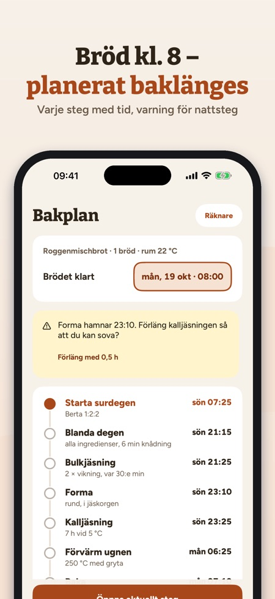
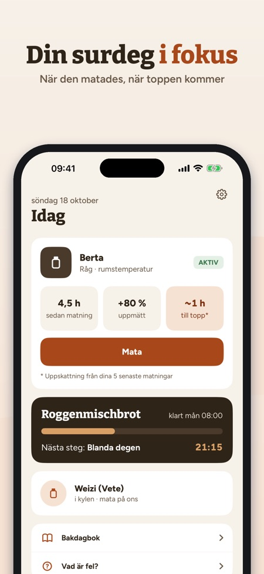
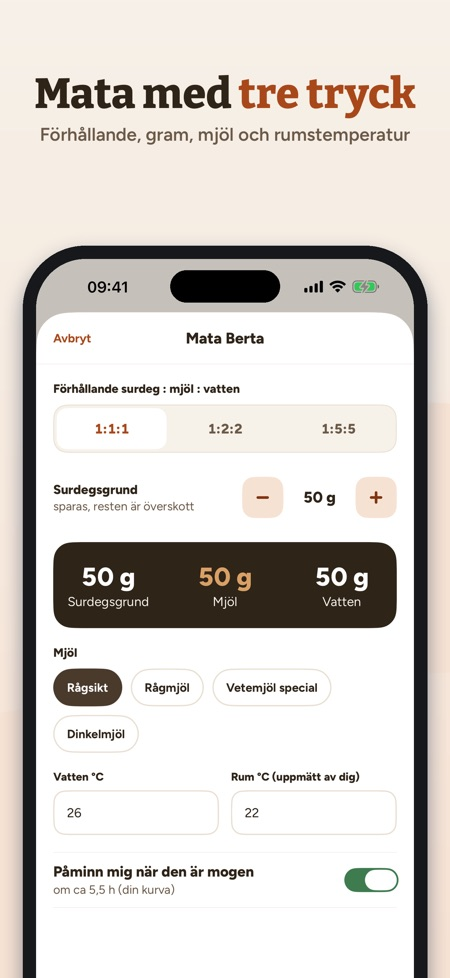

Mata surdegen, planera baket. Brödet klart kl. 8? Riseplan räknar baklänges när du ska starta, blanda och vika – och varnar om ett steg hamnar mitt i natten.



Din surdegskompis: mata, planera, baka – allt i gram och °C.
SURDEGSGRUND
• En eller flera surdegar (råg, vete, dinkel) med ålder och matningar
• Mata med tre tryck: förhållande 1:1:1, 1:2:2 eller 1:5:5, gram, mjöl, vatten- och rumstemperatur (uppmätt av dig)
• Påminnelse när surdegen är mogen – enligt din egen kurva
• Kylläge med påminnelse varje vecka
JÄSKURVA
• Mät höjden efter matningen och se din egen kurva
• Snittid till toppen och största volym från dina senaste matningar
• Hur mycket snabbare surdegen är i ett varmare rum – från dina egna data
BAGARPROCENT-RÄKNARE
• Degvikt, hydrering, surdeg och salt → mjöl, vatten, surdeg och salt i gram
• Mjölet och vattnet i surdegen räknas med
BAKPLAN BAKLÄNGES
• Välj när brödet ska vara klart – Riseplan räknar ut varje steg bakåt
• Jästiderna anpassas efter din rumstemperatur (markerat som tumregel)
• Varning om ett handgrepp hamnar under din vilotid, med förslag på längre kalljäsning
• Påminnelse vid varje steg
AKTIVT BAKSTEG
• Stor timer, räknare för sträck och vik, nästa steg i sikte
RECEPT
• Rågbröd/limpa, Landbrot, Roggenmischbrot, Roggenbrot, Desembrood, Grovbrød, Rugbrød, Ruisleipä, pizza och pannkakor av överbliven surdeg
• Mjölnamn från ditt land (t.ex. vetemjöl special, rågsikt)
BAKDAGBOK OCH HJÄLP
• Foton, stjärnor och anteckningar till varje bröd
• Vad gör man vid vätska ovanpå, svag jäsning, platt bröd eller för surt? Vid mögel: släng.
KÖP
Utan köp: en surdeg, matning, påminnelser, räknare och tre recept. Ett engångsköp låser upp allt: flera surdegar, jäskurva, bakplan, aktivt baksteg, alla recept och bakdagboken. Ingen prenumeration, ingen reklam.
INTEGRITET
Dina data stannar på enheten. Appen skickar anonym användningsstatistik via Google Analytics for Firebase (t.ex. vilka skärmar och knappar som används, köp i appen och ungefärligt land), men bara om du slår på det vid starten eller i Inställningar (avstängt som standard).